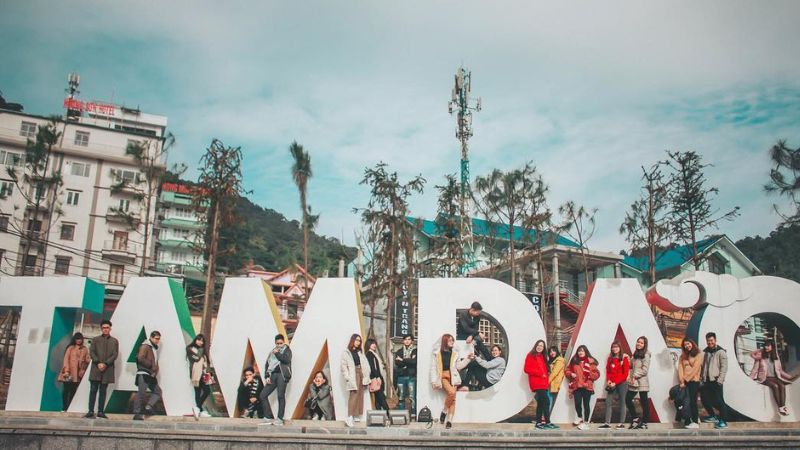

HELLO, IT'S NICE TO MEET YOU

Vĩnh Phúc nằm ở vùng Đồng bằng sông Hồng, phía bắc Việt Nam, với diện tích khoảng 1.235 km². Địa hình của tỉnh đa dạng, bao gồm cả đồng bằng, đồi núi và hồ nước. Vĩnh Phúc có khí hậu nhiệt đới gió mùa, với hai mùa rõ rệt: mùa mưa từ tháng 5 đến tháng 10 và mùa khô từ tháng 11 đến tháng 4 năm sau. Tỉnh có nhiều tài nguyên thiên nhiên, đặc biệt là rừng và hồ nước, trong đó nổi bật là khu du lịch Tam Đảo với khí hậu mát mẻ quanh năm và hồ Đại Lải là điểm du lịch sinh thái hấp dẫn. Những điều kiện tự nhiên này không chỉ thuận lợi cho phát triển nông nghiệp mà còn tạo tiềm năng lớn cho du lịch và phát triển công nghiệp..
Vĩnh Phúc có bề dày lịch sử phong phú, từ thời kỳ dựng nước cho đến hiện đại. Trong thời kỳ Hùng Vương, vùng đất này thuộc bộ Văn Lang, một trong 15 bộ của nước Văn Lang. Qua các triều đại phong kiến, Vĩnh Phúc luôn giữ vai trò quan trọng về kinh tế và quân sự. Thời nhà Lê, vùng đất này được biết đến với tên gọi là trấn Sơn Tây. Đến thời kỳ Pháp thuộc, Vĩnh Phúc là một phần của tỉnh Vĩnh Yên và sau đó được sáp nhập thành tỉnh Vĩnh Phúc vào năm 1950. Tỉnh đã trải qua nhiều biến động trong suốt cuộc kháng chiến chống Pháp và chống Mỹ, đóng góp nhiều cho công cuộc giải phóng dân tộc
Văn hóa ẩm thực Vĩnh Phúc rất phong phú và đa dạng, phản ánh đời sống và truyền thống của người dân địa phương. Các món ăn đặc sản nổi tiếng như cá thính Lập Thạch, bánh trưng Vĩnh Tường, và bánh gio Tây Đình đều mang hương vị đặc trưng, đậm đà. Ẩm thực Tam Đảo với các món như thịt lợn mán và gà đồi, chế biến đơn giản nhưng ngon miệng, cũng là điểm nhấn thu hút du khách. Các món ăn của Vĩnh Phúc không chỉ ngon miệng mà còn thể hiện sự khéo léo và tinh tế trong cách chế biến. Văn hóa ẩm thực nơi đây đã góp phần tạo nên sức hấp dẫn đặc biệt cho vùng đất này, để lại ấn tượng sâu sắc trong lòng du khách.
Chỉ cần một lần đặt chân đến mảnh đất Vĩnh Phúc, mọi du khách đều sẽ bị mê hoặc bởi thiên nhiên núi rừng hùng vĩ, con người thân thiện và nhiều món ăn hấp dẫn.
Và điều mà nhiều du khách cảm thấy tò mò nhất chắc hẳn là đặc sản Vĩnh Phúc phải không nào? Vậy vùng đất Bắc Bộ này có những món ăn nào hấp dẫn du khách.
Hãy để VN Foods giúp bạn hiểu hơn về văn hoá ẩm thực nơi đây nhé!